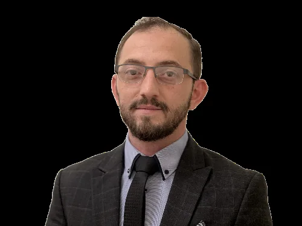

Company
Scientific experience. Human responsibility.
DOK ROK has grown from more than 15 years of research and practice across life sciences, human medicine, pharmaceuticals, patient counselling and international cooperation.
Our foundation
Medical innovation starts with better questions.
The company combines scientific curiosity with the ambition to translate complex biological relationships into responsible, practically relevant health solutions.
According to the historic company profile, the portfolio includes more than four registered patents. The focus is on natural, laboratory-tested and scientifically traceable approaches — from product ideas and dosage forms to quality, education and international research projects.
- Human medicine and applied life sciences
- Pharmaceutical and nutritional-medicine concepts
- Patient-oriented communication
- International research and cooperation projects

Guiding idea
“Health is Wealth.”
Health is not a single product. It emerges from knowledge, prevention, quality, responsible application and an understanding of the individual person.

Founder & CEO
Dr Qais Aburok
“The future of medicine takes shape where science, nutrition, prevention and an individual view of the human being meet.”
The NutraMedicine approach formulated in the previous company presentation connects modern biochemistry, genetics and personalised medicine with selected nutrition-related concepts. Its purpose is to consider not only symptoms, but also causes, risk factors and long-term quality of life.
- Studies in human medicine
- M. Sc. in Technical and Applied Biology
- B. Sc. in Biological Sciences
- Diploma in Human Biology
- International research projects
Science needs a next step.
Talk to us about research, product concepts, quality or medical-scientific projects.